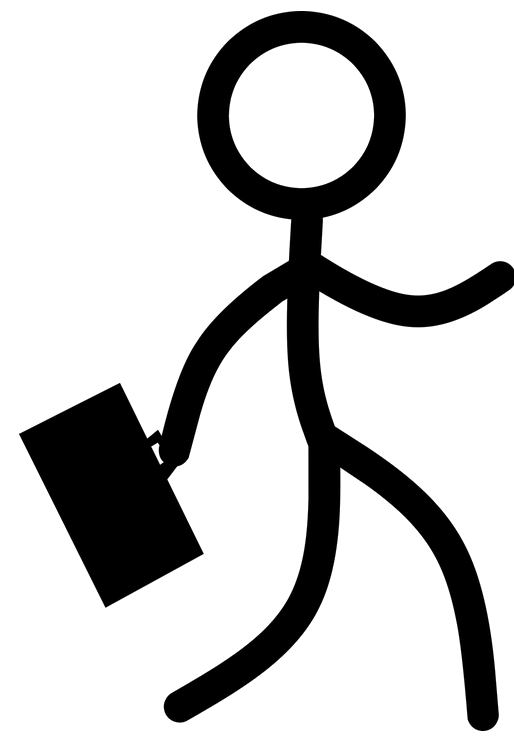
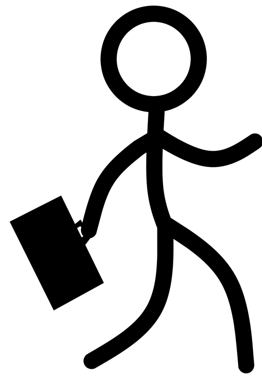

Communication skills
Good rhetorical skills acquired from the subject ELIT100 Academic English and Effective Communication
Business skills
Responsibility in performing business tasks in the most efficient way within the given deadline
Persistence in overcoming obstacles to achieving set goals
Willingness to work in a team
Mastery of written expression
Computer skills
Acquired at the Department of Software Engineering at IUS (IUS)Languages
| Reading | Writing | Speech | |
| Aquired at: Goethe Institut Bosna i Herzegovi | |||
| A1/A2 | A1/A2 | A1/A2 | |
| Aquired at: Centar za strane jezike Follow Me Altera lingua | |||
| C1 | C1 | C1 | |
| Aquired at: Spoken Turkish I & II IUS (IUS) | |||
| B2 | B2 | B2 | |
Other skills
Music: Completed Elementary Music School Mladen Pozajic Sarajevo, instrument: piano 
